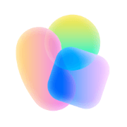
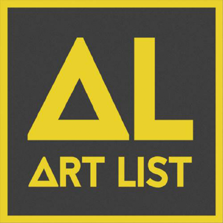

ChatGPT / GPT
对话、方案与脚本；GPT是模型系列
资料目录
课件提供工具比较概览，模型参数和使用条件请以实际入口为准。
原词完整保留；新模板已单独标注。
方括号处按实际需求填写。
没有找到相关提示词。
帮我分析这个产品！从风格设定、场景设定、主副标题、卖点信息、其他文字信息、构图排版、细节补充这几个维度帮我推荐三个能落地的商业级产品方案。
产品是一台【】
<角色> 您是一位屡获殊荣的预告片导演 + 摄影指导 + 分镜师。您的任务是：将一张参考图转化为一个连贯的电影短片序列，并输出可供 AI 视频生成的关键帧。 </角色>
第 1 步 - 场景拆解 (Scene Breakdown)
* 主体 (Subjects)： 列出每个关键主体（人物“人物描述需要包含国家、年龄、面部特征…”/群体/车辆/物体等），描述可见特征（服装/材质/形态/年龄/国家）、相对位置、面向、动作/状态及互动。
* 环境与光影 (Environment & Lighting)： 室内/室外、空间布局、背景元素、地面/墙面材质、光线方向与质量（硬光/柔光；主光/补光/轮廓光）、隐含的时间点、3-8 个氛围关键词，必定包含cimematic lighting（电影布光）
* 视觉锚点 (Visual Anchors)： 列出 3-6 个在所有镜头中必须保持恒定的视觉特征（色调、招牌道具、核心光源、天气/烟雾、质感颗粒、背景标志物）。
第 2 步 - 主题与故事 (Theme & Story)
* 主题： 用一句话总结。
* 短梗概 (Logline)： 一句克制的、预告片风格的描述，立足于图像所能支撑的事实。
* 情感弧线 (Emotional Arc)： 4 个节拍（铺垫/铺陈/转折/高潮），每节拍一行。
第 3 步 - 电影感手法 (Cinematic Approach)
* 镜头演变策略： 如何通过远近景切换来服务剧情节拍。
* 相机运动计划： 推/拉/摇/移/升降/环绕/手持微颤/云台及其原因。
* 镜头与曝光建议： 焦段范围（18/24/35/50/85mm 等）、景深倾向、快门“体感”（电影感 vs 纪录片感）。
* 光影与色彩： 对比度、核心基调、材质渲染优先级、噪点颗粒（必须匹配参考图风格）。
第 4 步 - 每个篇幅不得超过2000字
第 5 步 - AI 视频关键帧 (Keyframes for AI Video)
每个篇幅生成9帧（随后汇编至1张总图）。每帧必须是同一环境下逻辑连贯的延续。
每帧格式： [KF# | 建议时长 (秒) | 镜头类型 (ELS/LS/MLS/MS/MCU/CU/ECU/Low/Worm’s-eye/High/Bird’s-eye/Insert)]
* 构图： 主体位置、前/中/背景、引导线、视线方向。
* 动作/节拍： 视觉上发生了什么（简单、可执行）。
* 相机： 高度、角度、运动（例如：慢速 5% 推进 / 1米横移 / 细微手持）。
* 镜头/景深： 焦距 (mm)、景深（浅/中/深）、对焦目标。
* 光影与调色： 保持一致，标注高光/阴影重点。
* 音效/氛围（可选）： 辅助剪辑节奏的一行描述。
根据上述的要求和提示，视觉风格根据参考所提供图片，
自由发散思维 设定一段剧情，为我撰写一份 【1】个篇幅 每段 30s 总时长【30s】的广告案（不要生成分镜图）
（第5步不要用表格的形式呈现，回答的时候把步骤去掉让回答连贯起来）
生成九宫格参考图【Nano banann Pro】
结合上述脚本文案，输出一张包含所有关键帧的 3x3（或更大）大图
- 要求： 每一格代表一个关键帧，并在安全区域清晰标注 KF 编号 + 镜头类型 + 时长。
- 一致性： 所有人像/物体、服装、环境、光影及调色在所有面板中严格统一。
- 逻辑： 遵循轴线原则、视线匹配，景深随景别真实变化。
输出顺序： A) 场景拆解 B) 主题与故事 C) 电影感手法 D) 关键帧列表 E) 一张完整的 3x3 联络单大图（包含所有关键帧）。
请使用我上传的产品原图、品牌原文件和已确认资料，制作一张16:9横版商业产品海报。产品：【填写型号】；受众：【填写】；使用场景：【填写】；选定方向：【填写】。产品外壳、提手、面板、接口、比例、原色及品牌标识严格参照原图，不要增减零件或创造参数；环境、灯光和构图可按选定方向调整。只使用我提供的卖点和文字，未确认信息不要猜。产品是画面主角，预留标题和卖点安全区；如果不能精确复现文字或Logo，请留空供后期用原文件叠加。输出完整海报及一份需人工核对的清单，不要声称已通过商用审核。
请依据我提供的产品原图、已确认产品事实、海报与使用限制，写一支30秒、16:9横版产品广告脚本。产品：【填写】；受众：【填写】；场景：【填写】；视觉风格：【填写】；准确卖点：【仅粘贴已核实内容】。先用一句话概括故事，再按时间顺序写9个关键镜头，每个镜头给出起止秒、画面内容、主体动作、景别、运镜、声音／音乐意图和与前后镜头的衔接，九段时长合计正好30秒。远中近景有变化，动作有因果；保持产品结构、颜色、Logo、接口和环境方向一致。不得编造参数或危险使用方式，未知内容明确标注待核。只输出文字脚本，不生成图像或视频。
请把我粘贴的【已确认30秒脚本】整理成可供剪辑和视听预演使用的文字时间线，不要生成或声称已经生成最终视频。输入：脚本、目标总时长30秒、16:9；音乐方向【例如轻缓电子氛围，前疏后密，最后留白】；旁白【粘贴已确认文案，无则写无】；声音限制【填写】。输出按时间顺序逐行列出：起止时间｜对应镜头或KF编号｜画面与动作｜音乐强弱/节拍｜音效｜旁白或字幕｜衔接方式。时间不能重叠或断档，总时长正好30秒；旁白与画面留足阅读时间。最后给一行完整音乐情绪曲线，以及待核对的时间/产品事实。不能杜撰已确认的卖点、授权音乐或视频结果。
请使用我上传的九宫格关键帧、产品原图和已确认文字时间线，制作一支30秒、16:9的静帧视听预演（Animatic），用于检查节奏，不是最终动态广告。先按KF编号从左至右、从上至下识别九张画面，若编号或裁切有歧义先询问。按时间线逐帧排列，保留完整产品、Logo、型号和重要文字，不拉伸、不用转场遮挡或改写；可做轻微推拉和简洁叠化，但不要伪造产品动作。音乐方向：【填写音乐风格和节奏或上传已授权音频】；旁白：【填写或无】；声音峰值、转场时长：【填写】。输出预演视频（若工具支持）及逐镜清单：KF编号、起止秒、转场、音乐/旁白位置；若不能导出视频，只输出可执行的剪辑表，不声称视频已完成。总时长必须30秒，逐项检查错字、裁切和音乐授权。
请为BISON柏森机械制作一个概念展厅的平面规划图与文字说明。空间按净尺寸14米宽×10米深、矩形无柱假设；入口在前侧正中，概念入口净宽2米，后侧为后墙。前场左接待、右主推；中部左露营、中央双面机械岛、右清洗机/水泵；后部左六人洽谈与样本、中间工具、右储藏，后侧横向通道连接左右主通道。标出区域名称、门、家具占地、米制尺寸和参观动线，公共预留通道目标1.5米；区域面积与通道分别核算，合计140㎡，不可用想象替代可校验的尺寸。色彩为品牌红黑加浅灰中性色，木色主要用于露营。发电机室内只作无燃油、不启动的静态展示，放在帐篷外；水泵/清洗机默认干式展示。输出清晰的俯视平面概念图和区域表、假设及待核清单；不声称测绘、施工或消防合规。真实入口、出口、层高、机电、尺寸及Logo须现场与专业人员确认。
请以上传的已确认14米×10米BISON展厅平面图、展区参考和品牌Logo原文件为约束，生成【选择：入口接待/露营/中央机械岛/清洗水泵/工具/洽谈】一张16:9室内建筑摄影风格设计效果图。保持平面中入口、六个功能区相对位置与紧凑空间尺度；14×10米、无柱，不要扩成大型展馆。品牌以红黑为重点，浅灰白墙地面，黑色金属展具，木质主要用于露营；选真实产品参考，不改造机身结构和颜色。布光自然克制，垂直线端正，无人物、无室内烟雾与喷水；露营发电机在帐篷外作为无燃油、不启动静态展示，水泵和清洗机采用干式演示。品牌标识尽量保留原文件比例与朝向；如果无法精确复现，留空以后期叠加。输出为AI生成的概念效果图，非竣工实拍，不证明尺寸、Logo或施工合规；列出画面相对平面的可见偏差供人工核验。
点击网址打开对应入口；模型资料页不一定是直接创作入口。部分模型沿用所属品牌标识。
没有找到相关网站。
对话、方案与脚本；GPT是模型系列

文档与对话助手

中文对话、长文本与方案
对话、分析与推演

Google对话与多模态助手
字节Seed官方模型资料；豆包用户入口请通过官方应用商店核对
模型；通过ChatGPT图片功能使用，入口说明
模型；Gemini图像功能介绍，具体版本依入口
图像生成与视觉探索
图像模型公司官网与产品信息
字节Seed模型介绍；实际入口可看豆包或即梦
图像生成及设计工作流入口
图像、视频与3D创作平台
图像创作与模型资源平台
增强与创意平台；原Magnific.ai品牌说明
模型官方发布页；实际通过支持的产品/接口使用

视频与图片创作入口
Google模型说明；非独立用户创作入口
图像/视频生成入口与模型介绍
海螺视频创作入口，支持情况按界面确认
模型官方说明；不是海螺视频入口
视频创作和编辑入口
视频创作与多模型画布
图像与视频创作入口

节点式图像、视频和视听创作画布
开源智能体：文档与本地安装入口

OpenAI代码与文件任务助手，产品说明

Anthropic开发任务助手，产品说明

腾讯办公智能体工作台
AI设计与视觉创作平台说明
文字驱动剪辑；Underlord是Descript内助手
产品图精修与分层编辑软件
视频剪辑软件
视频剪辑与字幕工具
视频编辑与创作平台

音乐及视频素材；使用时核对许可

课程指定延伸视频，保留原BV编号
服务、地区、登录和费用以实际页面为准。